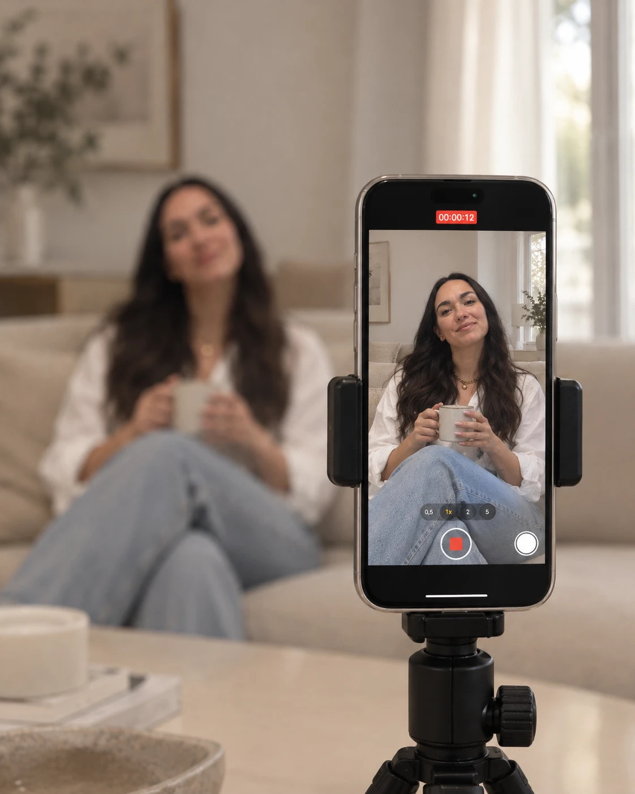

para crear un mes de contenido en una sola tarde
(para que el "no tengo tiempo" deje de ser una excusa)
Sin pensar qué subir cada día.
Pero hay un detalle… →
Y encima, nadie te compra.
¿Sabés por qué? →
No te falta tiempo. Hacés todo de a uno.
Son 4 pasos. El primero es el más fácil →
Pero ojo: con esto solo no alcanza… →
Guardalo, que ahora te lo resumo →
Una tarde = un mes listo.
Y para que no arranques de cero… →
Comentá
y te la envío por DM